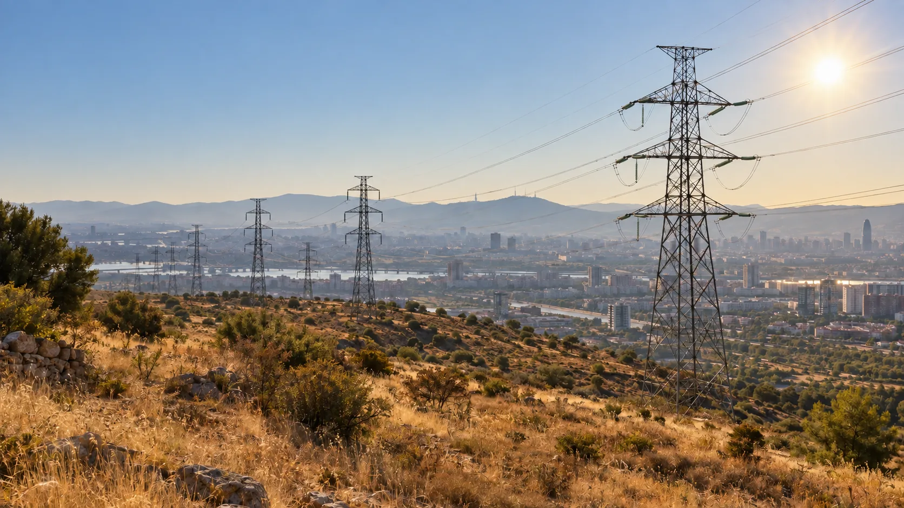
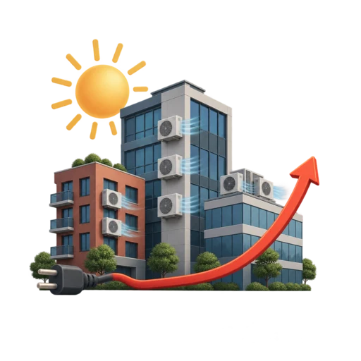
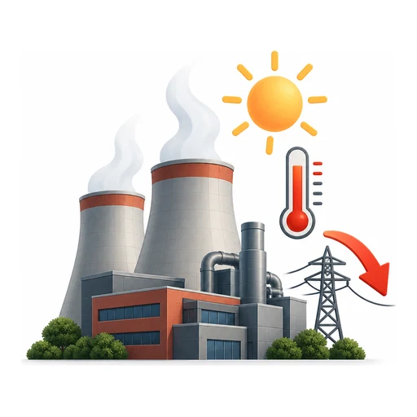
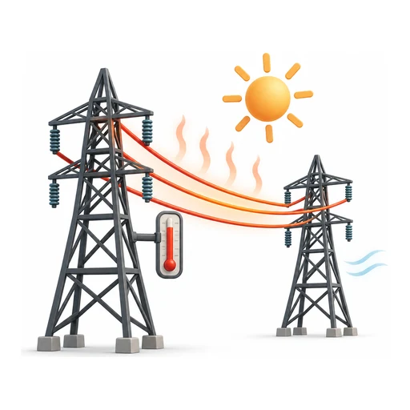
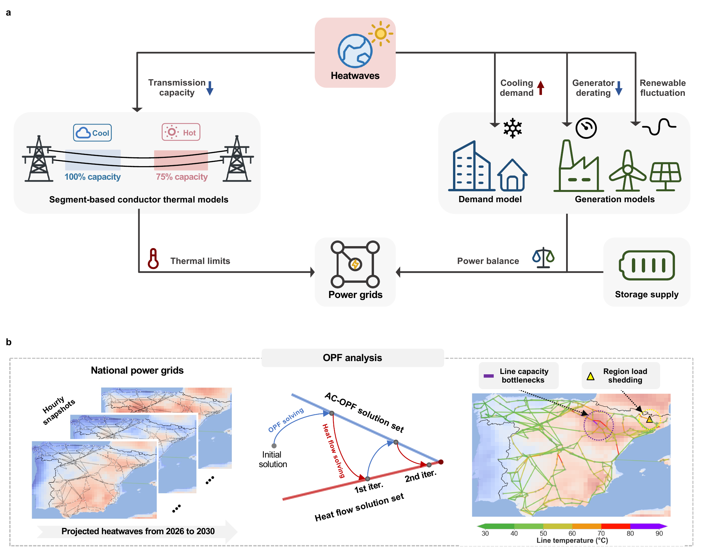
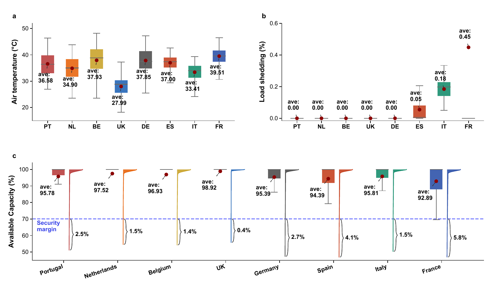

Europe's warming rate
Since the 1980s, Europe has warmed at more than twice the global average rate.
WMO climate assessment
Climate × electricity systems
HEAT-Analysis brings together three ways that extreme heat can affect a power grid: rising electricity use, changing power-plant output and hotter transmission lines. The combined model shows when these pressures may make electricity harder to deliver.
The study estimates near-term stress in grid models built from public data, rather than predicting outages in individual countries.
AI-generated editorial illustration, shown for context rather than as a record of an outage.
Why this matters
Europe's recent climate record shows that severe heat is becoming a more important condition for infrastructure planning. Its consequences are already visible in environmental and public-health indicators.
Since the 1980s, Europe has warmed at more than twice the global average rate.
WMO climate assessmentOn 17 July 2024, one fifth of European land reached at least strong heat stress.
Copernicus ESOTC 2024A peer-reviewed study estimated this toll across 35 European countries in summer 2022.
Nature Medicine studyTogether, these trends raise an important question for electricity systems: how does grid operation change when heat simultaneously raises demand, shifts generation and reduces transmission capacity?
The problem
These three effects interact through the network. Considering them together reveals how a constraint in one part of the system can change the ability of the whole grid to deliver power.

More air conditioning increases the amount of electricity that must reach homes and businesses.

Some thermal power plants lose available output as the air warms, while wind and solar production respond to the accompanying weather.

Air temperature, sunshine and wind alter conductor heating and therefore the current that a route can carry within the modelled temperature limit.
The framework
For every projected heatwave hour, the framework translates weather conditions into electricity demand, available generation and conductor temperatures. It then tests how the represented grid can serve demand within its modelled operating limits.

Method in brief
The hourly patterns of selected ERA5 heat events from 2019, 2022 and 2024 are transferred to bias-corrected C3S/CORDEX climate baselines for 2026–2030 under RCP 4.5.
Each weather realisation determines electricity demand, renewable production, temperature-related generator availability and heating along individual line segments.
An alternating-current optimisation balances generation and power delivery while enforcing the represented operating and thermal limits. Any remaining shortfall appears as load shedding, showing where the system cannot fully meet demand.
What the simulations show
For each of eight country-level grid representations, the analysis covers 480 projected heatwave hours. Differences in weather, network structure, generation, demand and storage lead to different operational responses.

The represented French, Spanish and Italian systems show higher load-shedding risk. The German and UK models, together with several northern counterparts, remain less affected under the tested conditions.
Links to neighbouring systems provide relief only when those systems retain spare power and the connecting routes can deliver it to the constrained area.
In the Spanish analysis, higher base demand increases load shedding. The storage comparison varies only the initial charge of the represented fleet; future storage locations and capacity could produce different outcomes.
Reproducible examples
The repository provides worked examples for readers who want to inspect the main weather and engineering calculations separately.
Notebook 01
See how selected historical heat-event patterns are combined with future reference climate fields.
View on GitHubNotebook 02
Follow the calibration of temperature-dependent electricity demand using the Demand.ninja approach.
View on GitHubNotebook 03
Inspect conductor heat-balance calculations and the temperature response assigned to different generator types.
View on GitHubScope and limitations
The analysis shows where modelled near-term heatwaves place stress on grid configurations built from public data. These results are intended to support further assessment, rather than forecast load shedding in individual countries.
Future network expansion, generation investment, storage deployment and operator decisions could change the estimates. With more specific system and investment data, the framework can assess candidate adaptation measures under projected heatwave conditions.